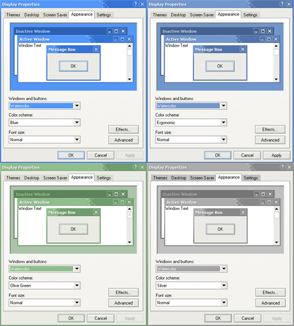
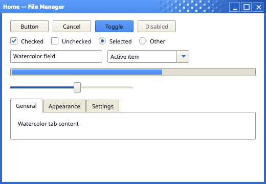
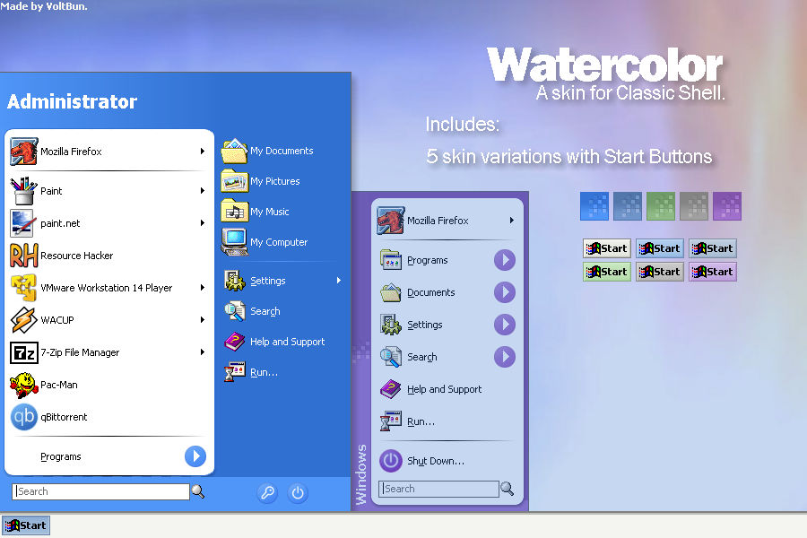
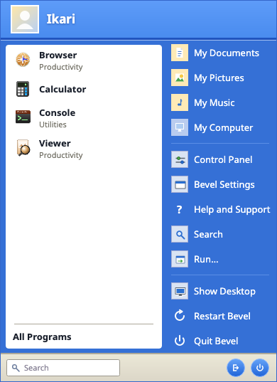
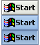
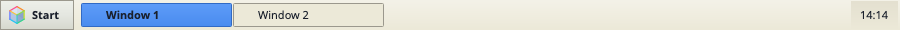
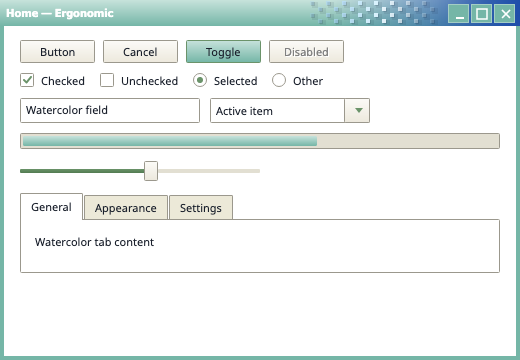
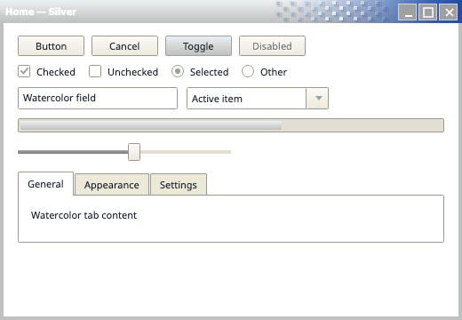
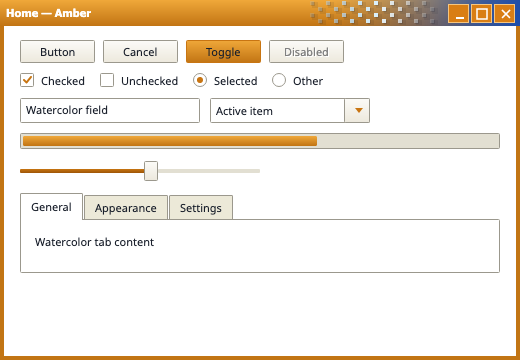
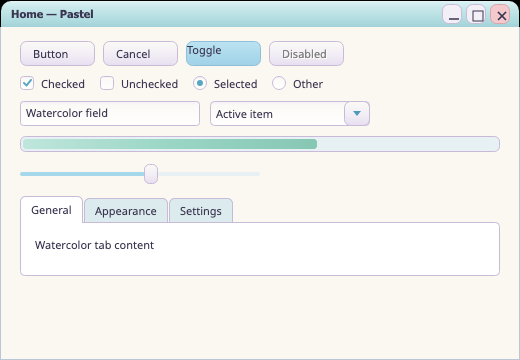

Side-by-side comparison between authentic Whistler build 2419 & Classic Shell Watercolor references and Bevel Flat runtime renders.





Square-cornered raised bevel, pale cream/periwinkle face, dark bold text.



